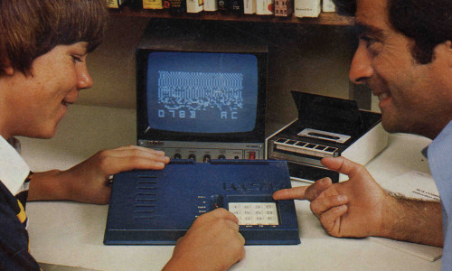

В этой серии статей я собираюсь рассказать как написать простейший эмулятор компьютера на примере CHIP-8. Вообще CHIP-8 не является реальным компьютером, его можно сравнить с виртуальной машиной (такой как java), но он отлично подходит для понимания основ эмуляции компьютерных систем.
Эмулятор мы будем писать на языке C++ с использованием графической библиотеки SDL. Код основывается на исходниках моего эмулятора emuChip.
История CHIP-8
CHIP-8 - это небольшой, интерпретируемый язык программирования и интерпретатор для него, впервые появившийся на домашних компьютерах COSMAC VIP, Telmac 1800, DREAM 6800 в конце 70-х годов. Создателем является Joseph Weisbecker. CHIP-8 использовался для создания игр, таких как Pong, Tetris, Space Invaders и т.п.

В 1990 году Andreas Gustafsson написал интерпретатор CHIP-8 для графического калькулятора HP-48. Эта версия была названа CHIP-48.
В 1991 году Erik Bryntse добавил в язык несколько нововведений, позволившие в 2 раза увеличить разрешение экрана в играх и использовать скроллинг. Данная версия стала называться SCHIP (Super Chip).
В настоящее время существует еще и MegaChip разработанный Revival Studios. В эту версию добавлена цветная графика и звук.
Технические характеристики
Экран
Оригинальная реализация CHIP-8 имеет монохромный(черно-белый) экран размером 64х32 пикселя. SCHIP в дополнение к основному имеет расширенный режим 128x64.
CHIP-8 рисует графику на экране используя спрайты. Спрайт имеет 8 пикселей в ширину и от 1 до 15 пикселей в высоту. Так же интерпретатор предоставляет 16 предопределенных спрайтов размером 4x5 пикселей. Это шестнадцатеричные числа от 0 до F.
Клавиатура
Компьютеры на которых использовался оригинальный CHIP-8 имели 16-клавишную клавиатуру следующего вида.
| 1 | 2 | 3 | C |
| 4 | 5 | 6 | D |
| 7 | 8 | 9 | E |
| A | 0 | B | F |
Память
CHIP-8 имеет 4 кб памти (адреса 0x000h-0xFFFh). Первые 512 байт (адреса 0x000h-0x200h) зарезервированы для интерпретатора, так что игре доступно только 3,584 байт. Соответственно игра располагается в памяти начиная с адреса 0x200h.
Регистры
CHIP-8 имеет 16 восьмибитных регистров общего назначения V0-VF. Регистр VF используется как флаг переноса и индикатор столкновений спрайтов.
Адресный регистр I используется для хранения адресов памяти и имеет размер 16 бит, но используются только младшие 12 бит, так как их хватает что бы адресовать 4 кб памяти.
Помимо регистров существует два восьмибитных таймера: задержки и звука. Оба таймера уменьшают свое значение 60 раз в секунду, пока не достигнут нуля. Если значение звукового таймера отлично от нуля интерпретатор выводил звук (beep!).
Стек
В стеке сохраняются адреса возврата при вызове функций. Оригинальный интерпретатор имел 12 уровней вложенности стека. Сейчас принято делать 16. Каждое значение стека имеет размер 2 байта.
На сегодня это все
В следующей статье мы перейдем к изучению команд языка и их опкодов.